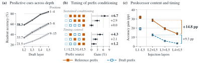
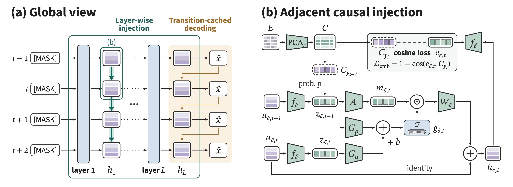

Dpine
Draft in Parallel, Condition Through Depth
Adjacent Causal Injection for Speculative Decoding
† Equal contribution § Project lead * Corresponding author
Where does the predecessor come in?
A parallel drafter predicts a whole block in one pass, so each position commits before its predecessors do. DSpine passes each predecessor's prediction into its successor at every layer, and reuses the same gate once the token is decoded.
Verified context “… the flight from Boston lands in”, then draft three tokens
Parallel drafting
Condition through depth
Serial post-backbone head
Decode bars are to scale with the measured post-backbone head time per round (Qwen3-8B, SGLang): Domino 0.97 ms and DSpark 0.88 ms (bar at their mean), DSpine 0.36 ms.
Abstract
Parallel speculative drafting generates multiple candidates in one backbone pass, but independent token selection can produce inconsistent continuations that shorten the accepted prefix. Existing methods mostly leave conditional decoding to a lightweight module after the backbone, which limits the flow of predecessor information to successors. Our analysis of DFlash shows that early positions already form recoverable predictions in shallow layers, and that accurate adjacent predecessors help successors more when they enter earlier.
We therefore propose DSpine, a drafter with causal conditioning injection throughout the backbone: at every layer, gated adjacent injection writes each predecessor's predicted feature into its successor, so the causal conditioning chain unfolds over network depth while all positions update in parallel. A unified transfer space built from the target model's output embeddings unifies layer-wise injection with predecessor-conditioned decoding, and layer-wise output-embedding supervision promotes the formation of predicted features in shallow layers. Fused kernels and a transition cache execute both efficiently in parallel within SGLang.
Across seven math, code, and chat benchmarks, DSpine achieves the longest acceptance length at both temperatures on Qwen3-4B and Qwen3-8B. At temperature zero on Qwen3-8B, it raises the seven-benchmark mean from DFlash's 3.77 to 4.82 (+27.8%); in SGLang serving tests, it delivers 23.3% higher throughput than DFlash on average.
Motivation
We probe the official Qwen3-8B DFlash drafter, using the target's greedy continuations as the correct tokens.

Earlier positions form predictions at shallower depth. At the same shallow layer, early block positions are read out far more accurately than distant ones, so a prefix could condition successors that are still forming. Correct prefix features from an early layer on raise consecutive correct tokens by 6.7%, and moving the same number of injections earlier lifts the gain from 1.2% to 4.3%.
The adjacent predecessor matters, and so does when it arrives. With correct earlier history, swapping only the predecessor for its draft prediction lowers successor accuracy by 31.8 points; supplying the same correct predecessor earlier rather than later gains 14.8 points.
Method
One injection carries predecessor information from the first layer to the last write.

Unified transfer space. Hidden states mix a predecessor's prediction with its context, so DSpine passes the prediction itself, in a fixed space built from the target LM head's output embeddings. An undecided predecessor sends a predicted feature; a decoded token enters as its embedding. Both take the same form, so one pathway carries either.
Adjacent causal injection. After every layer, each position receives a gated message from its immediate predecessor only. With block-causal attention, the dependency chain unfolds over depth while every layer still updates all positions in parallel.
Predecessor-conditioned decoding. Once a predecessor's token is decoded, its embedding replaces the predicted feature and the last write is redone, with no new module. A transition cache scores all K×K candidate pairs in parallel, so selection becomes a lookup.
Layer-wise output-embedding supervision. Each layer's predicted feature is aligned by cosine with the correct token's embedding, which helps features form in shallow layers and keeps them close to the embeddings used in decoding.
Results
All drafters are retrained on the same ShareGPT data with the same budget (five layers, block size 16, six epochs) and evaluated in SGLang on GSM8K, MATH-500, HumanEval, MBPP, LiveCodeBench, MT-Bench, and Arena-Hard.
| Math | Code | Chat | ||||||
|---|---|---|---|---|---|---|---|---|
| Method | GSM8K | MATH-500 | HumanEval | MBPP | LCB | MT-Bench | Arena-Hard | Avg. |
BibTeX
@article{zhang2026dspine,
title = {Draft in Parallel, Condition Through Depth: Adjacent Causal Injection for Speculative Decoding},
author = {Zhang, Haohui and Chen, Keyu and Sun, Haocheng and Gu, Weibo and Qiao, Ruizhi and Sun, Xing and Jiang, Bo},
journal = {arXiv preprint arXiv:2609.36173},
year = {2026}
}